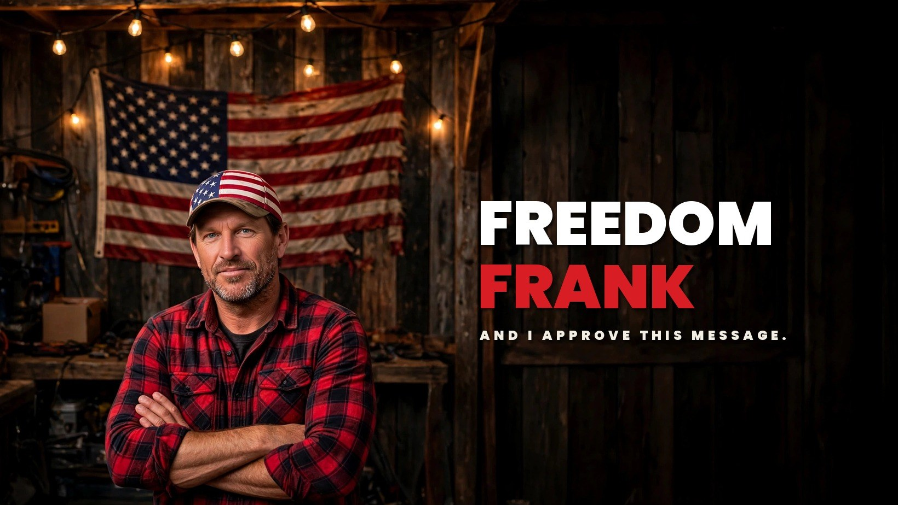
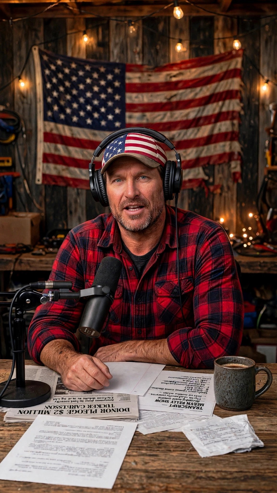
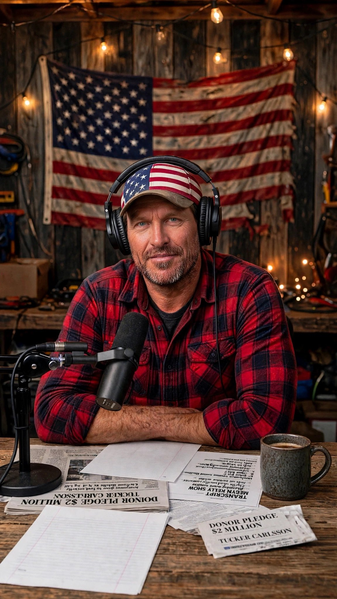
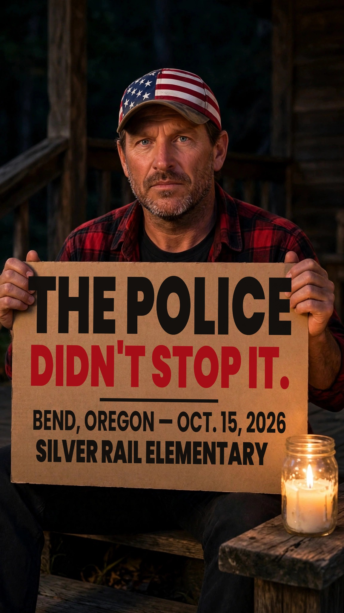
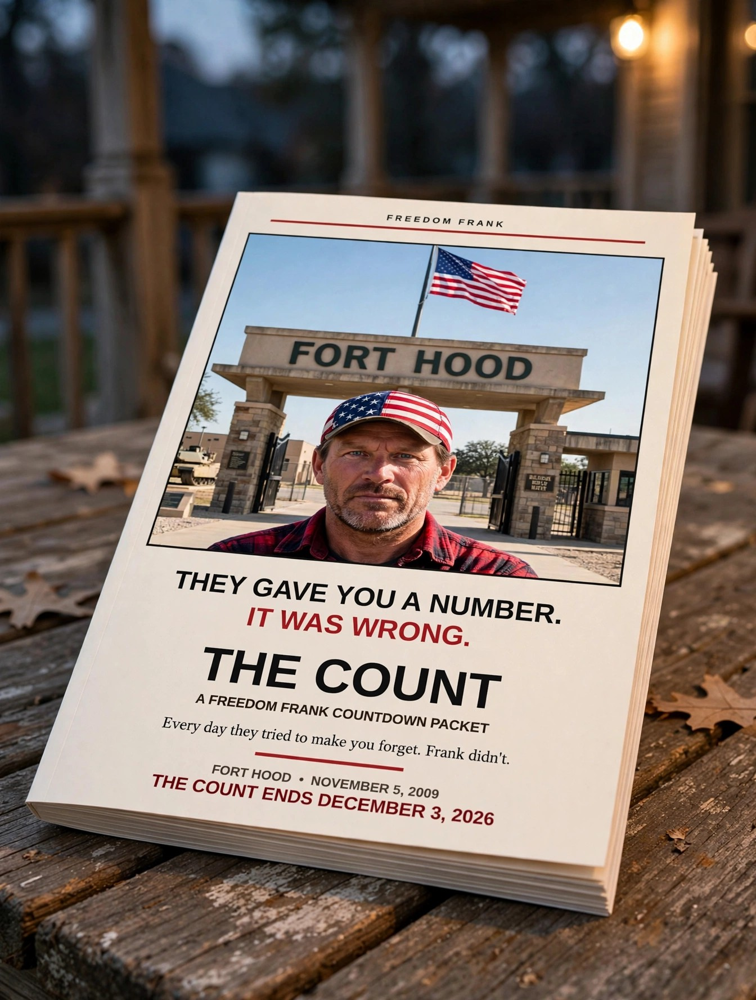
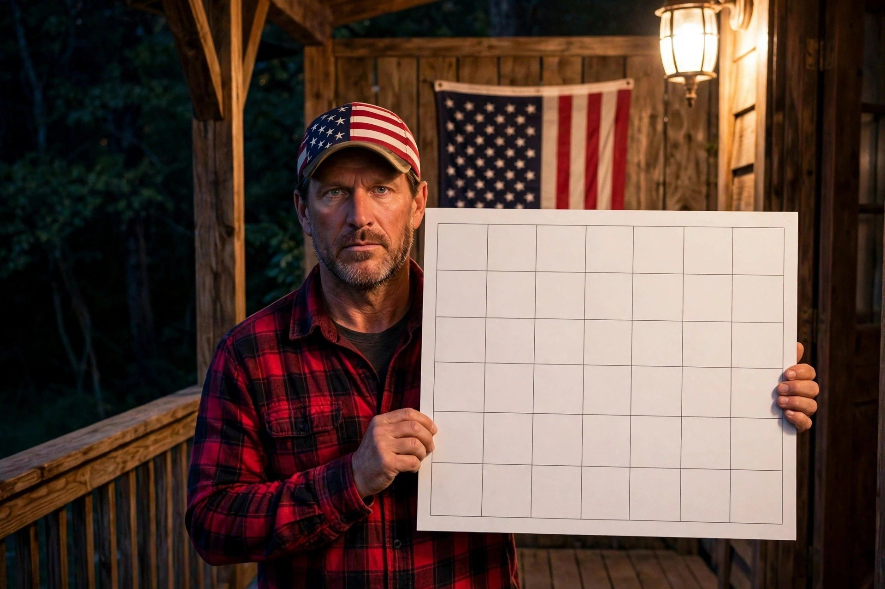
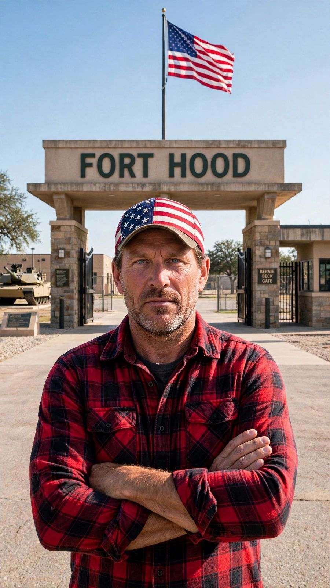

HE SAYS WHAT NOBODY ELSE WILL.
Frank's a working man with receipts — no sponsors, no network, nobody to answer to but his own people. This is his porch. Pull up a chair.
The Count is on — the 137-page Countdown Packet is free from the Porch, every day of it.
WHO IS FRANK?
Frank's got forty years of work in his hands and zero patience left for being lied to. Washington filed fourteen dead Americans under 'workplace violence' — Frank counts them by name. Suits can't buy him, politicians can't scare him, and every bit of it ends the same way: 'I'm Freedom Frank, and I approve this message.'
FROM THE STUDIO
This is where Frank does his homework — transcripts spread out, receipts stacked up, and a mug that never empties. The short videos are the warm-up. What's being built at this desk runs longer.


WATCH FRANK
His most-watched, straight off his Facebook page. Press play — it counts as a view over there too.

Watch on FacebookFRANK'S LAWS
Common sense, written down before they tax it.
- #001The $5,000 Check
- #002Gas Prices
- #003Tipping
- #004Working From Home
- #005College Degrees
- #006EV Mandates
- #007Fast Food Wages
- #008Self-Checkout
- #009Property Taxes
- #010Paper Straws
- #011HOAs
- #012Left Lane
The first twelve rulings are being bound into a booklet — the Porch list gets it first.
until the count ends — December 3, 2026
Frank counted all fourteen. This is where his people gather — and the 137-page Countdown Packet is free, always.
Free from the PorchGET THE COUNT
No choices to make and nothing to buy. Just the packet — all 57 days, made to be printed, kept close, and read one day at a time.
THE COUNT carries you from Day 56 to Day 0: Fort Hood, the fourteen names, a prayer and a verse for every day, and Frank walking the count with you until December 3, 2026.
GET MY FREE PACKET
The storyWHY DEC. 3
They gave you a number. It was wrong. Fourteen Americans never came home from Fort Hood, and Washington called it 'workplace violence.' Frank counts all 14 — and on December 3, 2026, the count ends. This porch is how nobody gets away with making you forget.
That's why the calendar on the porch runs through December 3rd, and why every day gets said out loud. A country that remembers beats a government that files things away.
The fourteen — say them out loud
- Michael Grant Cahill
- Libardo Eduardo Caraveo
- Justin Michael DeCrow
- John P. Gaffaney
- Frederick Greene
- Jason Dean Hunt
- Amy Sue Krueger
- Aaron Thomas Nemelka
- Michael S. Pearson
- Russell Gilbert Seager
- Francheska Velez
- Juanita L. Warman
- Kham See Xiong
— and Francheska Velez's unborn child. The 14th. The one they didn't count.

Inside the packetTHE COUNT
It's heavier than a free download has any right to be: 137 pages, built around one simple daily rhythm — read the page, read the verse out loud, pray the prayer, then take one quiet minute with a name.
- A letter from Frank
- All 57 days of the count — Day 56 to Day 0
- A prayer, a Bible verse, and a reflection for every day
- The fourteen names, honored together
- Your Page — a place to carry one name yourself
- Pass the Count — so the names don't stop with you
137 pages · 57 days · Fort Hood · Ends December 3, 2026

START THE COUNT TODAY
One email address. That's all it takes to get the whole packet.
Don't let them stop with youPASS THE COUNT
Fourteen names. You know them now. Pick one name and carry it — say it out loud for the rest of your life, so it's still being said when everyone who knew them is gone.
Write it on Your Page. Take a picture of your page, post it, and let the name lead. Tag @freedomfrankusa and use #PassTheCount. Start with the creed: I count fourteen.
Then hand the name to one person you trust and ask them to carry it too. On December 3rd, at dusk, we all say them together — every porch light lit, every name out loud. One voice is a whisper. Ten thousand is a country remembering.
Start with the free packetFRANK'S PICKS
What Frank actually uses. If he wouldn't run it on the job, it doesn't go here.
The Flag Frank Runs
The flag in Frank's first Pick — the one that doesn't fly faded.
SEE IT ON AMAZONThe Candle on Frank's Porch
A plain real-wax flameless candle with a daily timer — it relights itself every night of the count.
SEE IT ON AMAZONThe shelf grows the Frank way — everything on it gets used first.
Freedom Frank is a participant in the Amazon Services LLC Associates Program, an affiliate advertising program designed to provide a means for sites to earn advertising fees by advertising and linking to Amazon.com.
Where Frank's people sitTHE PORCH
Watching is free. Belonging is the Porch.
The Porch is where Frank's people sit — veterans, military families, working folks with forty years in their hands and every name still in their hearts. This is the roll of the ones who still stand, still pray, still say the names out loud, and still believe a man's word and a country's promise ought to mean something.
Subscribing puts your name on the roll with theirs. It keeps Frank independent — no sponsors, no network, nobody to answer to but his own people — and it keeps the porch light on for every family still waiting on the truth. Frank's letter comes every Sunday.
JOIN THE PORCH ON FACEBOOKThere's always a seat on the Porch for somebody who still believes the truth gets said out loud.